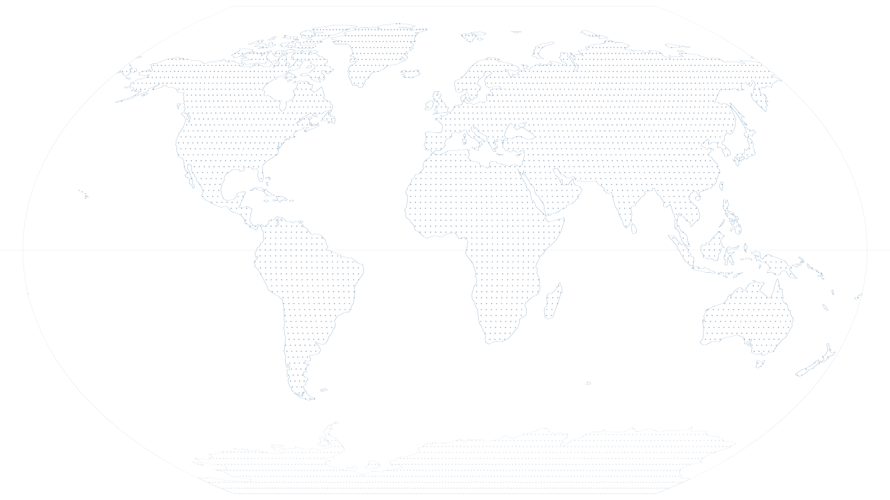

S-87
S-19
S-44
S-106
AREA-27
S-95
S-Σ
ANT-01
XK-17
全球态势
GLOBAL SITUATION / 第 23 月
帷幕薄弱 / 热区
收容过载
站点
— 悬停大洲 / 大洋查看区域
SCP 基金会
SECURE · CONTAIN · PROTECT
第零条 · O5-0
物质
经费
$120
▲+10
编制
84
/100
士气
65
异常
容量
28
/40
污染
08
▲+2
资产
06
政治
帷幕
78
权威
60
共识
55
LEVEL 5
O5-0 EYES ONLY
2049 · 03
任期 23 / 54
⚙
K 级预警
XK-17
人口普查
S2 显形
SCP-8███
55 / 100
距不可逆 12
立案
处置
帷幕
78
▼−2
待决
04
O5 例会
3 日
3
2
待决事件
04 项 · 1 项 6 回合内过期
×
日常 · 异常
食堂的第四把椅子
06
流程 · 政治
O5 表决：第 14 号提案
03
流程 · 帷幕
记忆删除预算超额
12
日常 · 人事
清洁工的加班单
—
日常 · 人事
新人的第一课
09
日常 · 异常
停尸房的编号
04
2 项未读
1 项已读 · 即将过期
再点事件门收起
▲
SITE-44
报告一次未登记的人员变动。